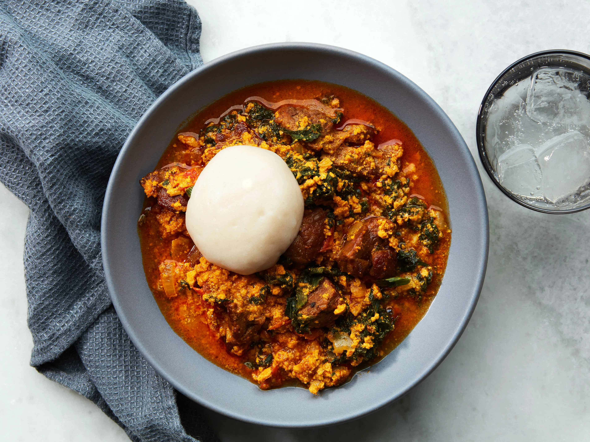
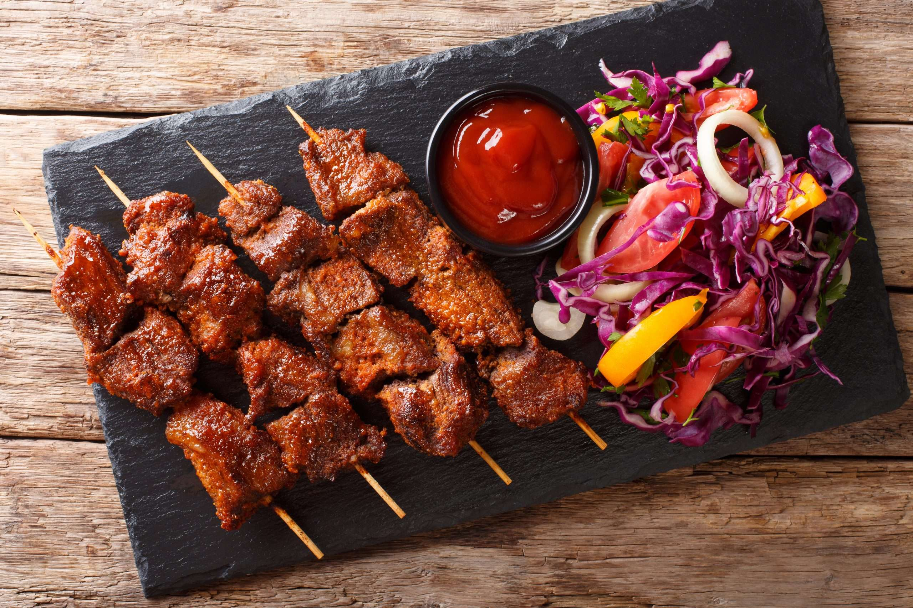
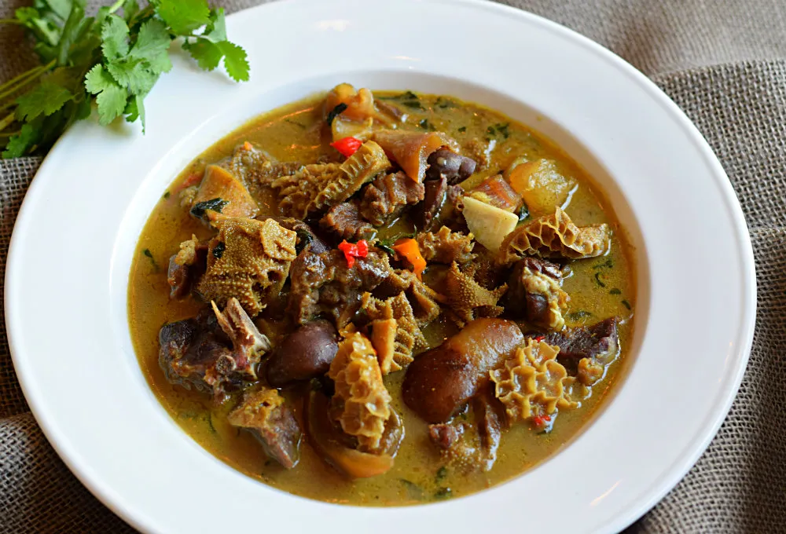

Jollof Rice
Jollof Rice is a classic Nigerian dish made with rice, tomatoes, onions, and a variety of spices. It is usually served with fried plantains, chicken or beef, and a side salad.
Egusi Soup
Egusi Soup is a popular Nigerian soup made with ground melon seeds, vegetables, and meat or fish. It is usually served with fufu or eba.
Suya
Suya is a popular Nigerian street food made with skewered and grilled meat, usually beef or chicken, that has been seasoned with a spicy peanut sauce.
Pepper Soup
Pepper soup is a spicy and flavorful Nigerian soup made with assorted meat, fish or chicken, and a blend of spices and herbs.
Akara
Akara is a popular Nigerian breakfast or snack made from black-eyed peas that have been ground, seasoned, and deep-fried until golden brown.
Recipes
- 3 cups long-grain white rice 3-4 large tomatoes, chopped 2 onions, chopped 2 red bell peppers, chopped 1 scotch bonnet pepper, chopped 3 cloves garlic, minced 2 tablespoons tomato paste 1 teaspoon thyme 1 teaspoon curry powder 2 teaspoons smoked paprika 2 bay leaves Salt and black pepper, to taste 2 cups chicken stock 1/4 cup vegetable oil
- 1 cup ground egusi (melon) seeds 2 cups chicken or beef stock 1 onion, chopped 2 tomatoes, chopped 2 bell peppers, chopped 2 scotch bonnet peppers, chopped 2 cups chopped spinach or kale 1 pound beef or fish, cut into small pieces Salt and black pepper, to taste 1/4 cup palm oil
- 2 pounds beef or chicken, cut into thin strips 1/2 cup peanut butter 2 tablespoons chili powder 1 teaspoon smoked paprika 1 teaspoon garlic powder 1 teaspoon onion powder
- 1 pound assorted meat, fish or chicken 2 onions, chopped 2 tablespoons ground crayfish 2 tablespoons ground pepper soup spice 2 scotch bonnet peppers, chopped 1 teaspoon ground ginger 1 teaspoon garlic powder Salt and black pepper, to taste 4 cups water 2 tablespoons vegetable oil Fresh herbs, for garnish
- 2 cups black-eyed peas, soaked overnight 1 onion, chopped 1 scotch bonnet pepper, chopped Salt and black pepper, to taste Vegetable oil, for frying